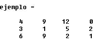

Objetivos:
-
Que apliques los conocimientos sobre la declaración y uso de
matrices, además de repasar el tema de ciclos.
-
Que ejercites
la habilidad de hacer frente a los mensajes de error que
envía la herramienta de desarrollo.

Forma de trabajo:
Actividad individual

Instrucciones:
- De manera individual escribe un programa en C
para cada uno de los ejercicios.
- Una vez que hayas terminado tu programa, es tu
responsabilidad ayudar a tus compañeros de equipo a que
terminen su programa.
- Entrega, vía la plataforma, los archivos
*.c que contengan los programas en C.
Ejercicios:
Construye un programa
completo en C libre de warnings y errores, que incluya las siguientes
funciones o procedimientos:
Utilizando la
estructura
#define, define las
constantes REN de 3 y COL de 4,
que serán el número renglones y columnas respectivamente que tendrá
la matriz en el programa.
a) Capturar la matriz
Crea el
procedimiento
capturaMatriz que recibe
como parámetros una matriz de flotantes de REN
por COL. El procedimiento pedirá al usuario un
valor flotante y lo almacenará en la localidad correspondiente en la
matriz. (hasta que se llene la matriz se repite el mismo proceso).
El formato en que deberá llenar la matriz
sería el siguiente:

b) Imprimir la matriz
Crea el
procedimiento
imprimeMatriz, que recibe
como parámetros una matriz de flotantes de REN por
COL. El procedimiento desplegará en pantalla el
contenido de la matriz.
NOTA:
Les sugiero que para
imprimir la matriz de
flotantes utilicen el
siguiente formato:
printf(“%6.1f”, M[i][j])
Esto les permitirá tener 6 espacios a la izquierda y 1 solo decimal.

c)
Multiplicación de un escalar por una columna
Crea el
procedimiento
columnaMatriz, que recibe como
parámetros una matriz de flotantes de REN por COL, un
entero columna y un flotante num. El procedimiento
multiplicará la columna de la matriz por el valor de num.
Ejemplo:
- Si la matriz tiene los siguientes valores:
2 5
6 4
3 4 5 1
7 8 5 6
- Después de llamar al procedimiento columnaMatriz
con el valor de columna de 1 y el de num de
4.0, los nuevos valores en la matriz deberán
ser:
2
20 6 4
3
16 5 1
7 32 5 6
d) Intercambiar
columnas de la matriz
Crea el
procedimiento
intercambiaColumnas, que recibe como parámetros una
matriz de flotantes de REN
por COL, un entero columna1 y un entero
columna2. El procedimiento intercambiará los valores de
la columna1 por los valores de la
columna2 de la matriz.
Ejemplo:
-
Si la matriz tiene los siguientes
valores:
2
5 6 4
3 4 9 1
7 8 5 6
- Después de llamar al procedimiento intercambiaColumnas
con el valor de la columna1 = 1 y
el de la columna2
= 2, los nuevos valores en la matriz deberán ser:
2
6 5 4
3 9 4 1
7 5 8 6
e) Sumar a una columna el
múltiplo de otro
Crea el
procedimiento sumaMultiplo,
que recibe como parámetros una matriz de flotantes de REN
por COL, un entero columnaA, un entero columnaB
y
un valor flotante num. El procedimiento realizará lo
siguiente: "A cada número contenido en la columnaB se le va a sumar un
múltiplo del número contenido en la misma posición de la
columnaA"
columnaB(posición) = columnaB(posición) +
Num * columnaA(posición)
Ejemplo:
- Para la siguiente matriz:
4.0 9.0 12.0 0
3.0 1.0 5.0 2.0
6.0 9.0 2.0 1.0
-
Después de
llamar al procedimiento sumaMultiplo con el valor de la
columnaA = 0, la columnaB = 1 y
num = .5, es decir, si se necesitara
realizar la suma de la mitad de la columnaA a la
columnaB, los nuevos valores en la
matriz deberán ser:
4.0 11.0 12.0 0
3.0 2.5
5.0 2.0
6.0 12.0
2.0 1.0
f) Sumar diagonal inversa
Crea la función
sumaDiagonalInversa, que
recibe como parámetros una matriz de valores flotantes de REN
por COL. La función regresará el resultado de sumar los
elementos contenidos en la diagonal inversa de la matriz.
Ejemplo:
- Para la siguiente matriz:
4.0
9.0 12.0
0
5.0
5.5 11.0 2.0
6.0 9.0
2.0
1.0
-
sumaDiagonalInversa
debe regresar como resultado: 20.0
Menú principal
Escribe el
código necesario dentro del main
para desplegar el siguiente menú y brindarle al usuario la
oportunidad de ejecutar cualquiera de las funciones o
procedimientos que han sido construidos:
MENU
a. Capturar matriz
b. Imprimir matriz
c. Multiplicar columna de la
matriz
d. Intercambiar columnas de la matriz
e. Sumar a una columna el
multiplo de otra
f. Sumar diagonal inversa
s. Salir
Pulse la opción deseada:
- Utilizando el ciclo do-while cicle el programa hasta que el
usuario seleccione opción de Salir (s)
- Guarda el archivo con
el nombre: Z_Matrícula.c

Especificaciones de entrega:
- Formato de entrega: c
- Nombre del entregable:
Z_matrícula.c
- Medio de entrega:
Se entrega en Canvas en la sección de Laboratorio:
Matrices
Instrucciones para enviar tus archivos por Canvas:
- Haz clic en la actividad de
Laboratorio: Matrices
- Haz clic en el botón de
Entregar tarea.
- En el fólder de Carga
del archivo, haz clic en el botón de Examinar
y localiza el archivo *.py. Si necesitas agregar más
archivos, haz clic en +Agregue otro archivo, haz
clic en el botón de Examinar y localiza el otro
archivo *.py.
|